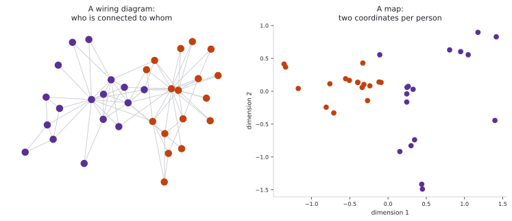
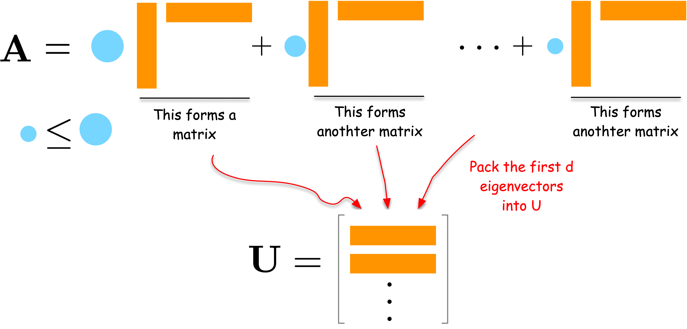
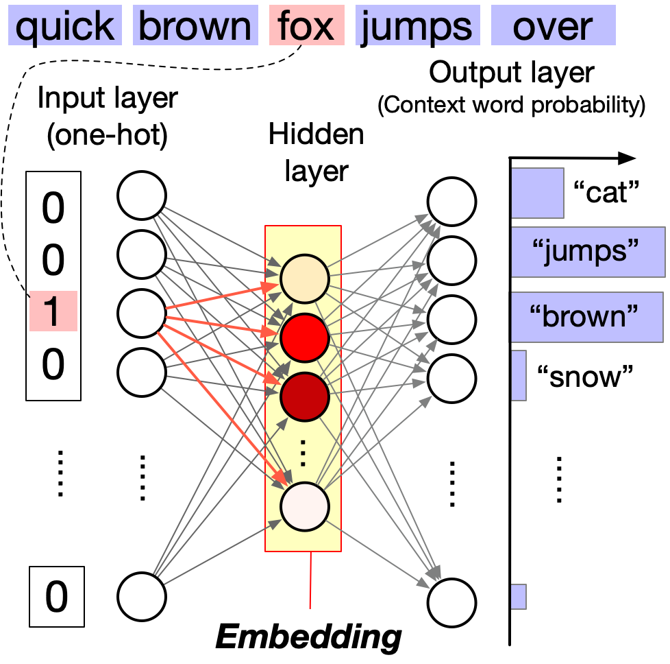
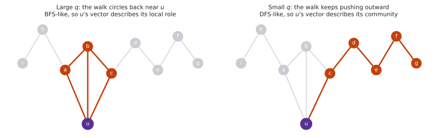

From Wiring Diagram to Map
The big question of this module. How do you turn a network into coordinates without throwing away what makes it a network?
Why would you give a node coordinates?

Right now the only description you have of a node is its row of the adjacency matrix. For the karate club that is 34 numbers per person, most of them zero. That is what people mean when they call a network high-dimensional data: each node is described by as many numbers as there are nodes, nearly all of them zero, and the numbers are not quantities you can compare — entry 7 answers “is person 7 your friend”, not “how much”.
Every tool you already know wants the opposite. k-means, logistic regression, a scatter plot: all of them want a short list of numbers per item, where being close in those numbers means being similar. Network embedding builds exactly that — a map sending each node to a point in \mathbb{R}^d with d \ll N (two if you want a picture, 64 or 128 in practice), chosen so that nodes sitting in similar positions in the network land near each other.
Once the map exists, everything downstream is ordinary machine learning: cluster the points, classify them, or find pairs of points that are suspiciously close and call those your predicted links.
Spectral embedding
Compression: from N numbers per node down to d
Let us approach spectral embedding from the perspective of network compression. Suppose we have an adjacency matrix \mathbf{A} of a network. The adjacency matrix is high-dimensional data, i.e., a matrix of size N \times N for a network of N nodes. We want to compress it into a lower-dimensional matrix \mathbf{U} of size N \times d for a user-defined small integer d < N. A good \mathbf{U} should preserve the network structure and thus can reconstruct the original data \mathbf{A} as closely as possible.
Before any algebra, watch that trade happen on twenty people. Throw the table away, keep two numbers per person, then try to rebuild the network from those numbers alone — and at the end, choose d yourself.
Nothing there was free. Eleven friendships did not survive the round trip, and eleven that never existed were invented in their place. That is the general situation: compression is lossy, and the only question is how much you lose per number you keep. Writing that question down is the optimization problem:
\min_{\mathbf{U}} J(\mathbf{U}),\quad J(\mathbf{U}) = \| \mathbf{A} - \mathbf{U}\mathbf{U}^\top \|_F^2
where:
- \mathbf{U}\mathbf{U}^\top is an N \times N matrix built back out of the d coordinates — the reconstructed network. Its (i,j) entry is the dot product u_i^\top u_j of the two nodes’ coordinate vectors, so “reconstruction” literally means: two nodes are predicted to be connected when their coordinates point the same way.
- \|\cdot\|_F is the Frobenius norm: the square root of the sum of the squares of all entries of a matrix. Squaring it, as above, gives the plain sum of squared entries — so J(\mathbf{U}) adds up one squared error per node pair.
- J(\mathbf{U}) is the loss function that measures the difference between the original network \mathbf{A} and the reconstructed network \mathbf{U}\mathbf{U}^\top.
By minimizing J with respect to \mathbf{U}, we obtain the best low-dimensional embedding of the network.
What an eigenvector is
The solution is written in eigenvectors, so here is the one-paragraph version.
Take the smallest possible network: two nodes joined by one edge, with adjacency matrix
\mathbf{A} = \begin{bmatrix} 0 & 1 \\ 1 & 0 \end{bmatrix}
Multiplying a vector by this matrix swaps its two entries, so (3, 5) becomes (5, 3) — a different direction. Two vectors survive the swap. (1, 1) comes back as (1, 1), unchanged. (1, -1) comes back as (-1, 1): the same line, flipped.
A vector that a matrix only stretches or flips, never turns, is an eigenvector of that matrix, and the stretch factor is its eigenvalue \lambda, defined by \mathbf{A}\mathbf{u} = \lambda \mathbf{u}. Here \mathbf{u}_1 = (1,1)/\sqrt{2} with \lambda_1 = 1, and \mathbf{u}_2 = (1,-1)/\sqrt{2} with \lambda_2 = -1. Eigenvectors are conventionally rescaled to length 1, so an eigenvector carries only a direction; the size lives in \lambda.
Everything here relies on \mathbf{A} being symmetric (A_{ij} = A_{ji}), which is true for an undirected network. A symmetric N \times N matrix has exactly N eigenvectors, they are mutually perpendicular, and every eigenvalue is a real number. A directed network gives no such guarantee — which is why spectral embedding is a story about undirected networks.
The network as a stack of layers: keep the heavy ones
Those N eigenvectors let you take the network apart:
\mathbf{A} = \sum_{i=1}^N \lambda_i \mathbf{u}_i \mathbf{u}_i^\top
Each term \lambda_i \mathbf{u}_i \mathbf{u}_i^\top is an outer product — an N \times N matrix built from a single vector, so it has rank one — and |\lambda_i| says how much of \mathbf{A} that one layer accounts for. The network is a stack of N transparencies: a few carry the picture and the rest are nearly blank.
Check it on the two-node network. The two layers are
\mathbf{u}_1 \mathbf{u}_1^\top = \begin{bmatrix} 0.5 & 0.5 \\ 0.5 & 0.5 \end{bmatrix}, \qquad \mathbf{u}_2 \mathbf{u}_2^\top = \begin{bmatrix} 0.5 & -0.5 \\ -0.5 & 0.5 \end{bmatrix}
and 1 \times the first plus (-1) \times the second returns \begin{bmatrix} 0 & 1 \\ 1 & 0\end{bmatrix} exactly, which is \mathbf{A}.
To compress, keep only the d heaviest layers. The embedding that does this is
\mathbf{U} = \left[\, \sqrt{\lambda_1}\,\mathbf{u}_1,\ \sqrt{\lambda_2}\,\mathbf{u}_2,\ \ldots,\ \sqrt{\lambda_d}\,\mathbf{u}_d \,\right]
because then \mathbf{U}\mathbf{U}^\top = \sum_{i=1}^d \lambda_i \mathbf{u}_i \mathbf{u}_i^\top, which is exactly the truncated stack. The \sqrt{\lambda_i} is not decoration: eigenvectors all have length 1, so without it the first dimension and the fiftieth would be given equal weight even though the first explains a hundred times more of the network.
Take the d largest eigenvalues, and largest means signed, not largest in absolute value: \mathbf{U}\mathbf{U}^\top can only ever add a layer with a positive sign, so a large negative \lambda is of no use to it.

The derivation — take the derivative of J, set it to zero, and see which \mathbf{U} satisfies it — is in the appendix.
Modularity embedding
In a similar vein, we can use the modularity matrix to generate a low-dimensional embedding of the network. Let us define the modularity matrix \mathbf{Q} as follows:
Q_{ij} = \frac{1}{2m}A_{ij} - \frac{k_i k_j}{4m^2}
where k_i is the degree of node i, and m is the number of edges in the network.
We then compute the eigenvectors of \mathbf{Q} and use them to embed the network into a low-dimensional space just as we did for the adjacency matrix. The modularity embedding can be used to bipartition the network into two communities using a simple algorithm: group nodes by the sign of the leading eigenvector — the one with the largest eigenvalue (Newman 2006). Positive entries form one community, negative entries the other.
Laplacian eigenmap
Laplacian Eigenmap (Belkin and Niyogi 2003) is another approach to compress a network into a low-dimensional space. The fundamental idea behind this method is to position connected nodes close to each other in the low-dimensional space. This approach leads to the following optimization problem:
\min_{\mathbf{U}} J_{LE}(\mathbf{U}),\quad J_{LE}(\mathbf{U}) = \frac{1}{2}\sum_{i,j} A_{ij} \| u_i - u_j \|^2
Read it as a physical system: every edge is a spring pulling its two endpoints together, and we are looking for the resting position.
A few lines of algebra (in the appendix) rewrite this as J_{LE}(\mathbf{U}) = \text{Tr}(\mathbf{U}^\top \mathbf{L} \mathbf{U}), where \mathbf{L} is the graph Laplacian matrix:
L_{ij} = \begin{cases} k_i & \text{if } i = j \\ -A_{ij} & \text{if } i \neq j \end{cases}
As written, though, the springs win outright: put every node at the origin and the objective is zero. To rule that answer out we require the d coordinate columns to be orthonormal, \mathbf{U}^\top \mathbf{U} = \mathbf{I} — the embedding must actually spread the nodes out and must actually use all d of its dimensions. Minimizing under that constraint (via a Lagrange multiplier, which is where the \lambda comes from) turns the problem into an eigenvalue problem:
\mathbf{L}\mathbf{u} = \lambda \mathbf{u}
Solution: the d eigenvectors associated with the d smallest nonzero eigenvalues of \mathbf{L}. The very smallest eigenvalue is always 0, and its eigenvector is the all-ones vector, which places every node at the same point — the collapsed answer we just excluded, so it is discarded.
The normalized Laplacian
The Laplacian \mathbf{L} = \mathbf{D} - \mathbf{A} has a bias: its entries scale with degree, so hubs dominate the objective \sum_{ij} A_{ij}\|u_i - u_j\|^2 simply by having many terms. A hub is pulled toward the average of a hundred neighbors while a leaf is pulled by one, and the embedding ends up describing the hubs.
The standard remedy is the symmetric normalized Laplacian:
\mathbf{L}_{\text{sym}} = \mathbf{D}^{-\frac{1}{2}} \mathbf{L} \mathbf{D}^{-\frac{1}{2}} = \mathbf{I} - \mathbf{D}^{-\frac{1}{2}} \mathbf{A} \mathbf{D}^{-\frac{1}{2}}
Dividing by \sqrt{k_i k_j} discounts each edge by the degrees at its ends, so a connection to a hub counts for less than a connection to a leaf. A useful side effect is that the eigenvalues of \mathbf{L}_{\text{sym}} always lie in [0, 2] regardless of the network, which makes them comparable across networks and, in Module 9, makes it possible to design filters on them.
There is a third variant, the random-walk Laplacian \mathbf{L}_{\text{rw}} = \mathbf{D}^{-1}\mathbf{L} = \mathbf{I} - \mathbf{P}, where \mathbf{P} is the transition matrix from Module 7. Its eigenvectors are those of \mathbf{L}_{\text{sym}} rescaled by \mathbf{D}^{-1/2}, so the three Laplacians are three views of the same object — which is why spectral embedding, spectral clustering and random walks keep turning out to be the same theory.
The Fiedler vector splits a network in two
Both Laplacians have smallest eigenvalue \lambda_1 = 0, with the constant vector as its eigenvector — the trivial solution we discard. The interesting one is the second smallest.
\lambda_2 is called the algebraic connectivity of the network, and its eigenvector is the Fiedler vector. Two facts make them important:
- \lambda_2 = 0 exactly when the network is disconnected. More generally, the multiplicity of the eigenvalue 0 equals the number of connected components.
- When \lambda_2 is small but nonzero, the network is nearly disconnected — there is a bottleneck. The Fiedler vector tells you where: nodes on one side of the bottleneck get positive entries, nodes on the other side negative ones.
So the simplest possible spectral algorithm is: compute the Fiedler vector, split nodes by sign, done. That is a bipartition of the network into two well-separated groups.
\lambda_2 also fixes the mixing time of a random walk (Module 7): a small \lambda_2 means a bottleneck, a bottleneck means slow mixing, and slow mixing means the walker gets trapped in communities. The same number governs geometry, dynamics and clustering.
Spectral clustering is normalized cut, relaxed
Generalizing beyond two groups gives spectral clustering, one of the most used clustering algorithms anywhere:
- Compute the d eigenvectors of \mathbf{L}_{\text{sym}} with the smallest nonzero eigenvalues.
- Give each node the d-dimensional coordinate formed by its entries in those eigenvectors.
- Run k-means on those coordinates.
Step 3 is ordinary clustering in Euclidean space — which is the whole point of embedding. The hard part, turning the graph into geometry, was done in steps 1 and 2.
This also closes a loop back to Module 5. The normalized cut objective there was NP-hard as stated. If you relax it — allow the community indicator vector to take continuous values instead of just \{0,1\} — the resulting optimization is exactly the Laplacian eigenproblem above. Spectral clustering is the relaxation of normalized cut, and the eigenvectors are the relaxed solution that k-means then rounds back into discrete groups.
A detour through language: word2vec
The most widely used graph embedding methods are not graph methods at all. They are word2vec — a model built for text — fed with random walks instead of sentences. So we detour through language first. Once word2vec is understood, the graph part takes three lines.
word2vec is a neural network model that learns word embeddings in a continuous vector space. It was introduced by Tomas Mikolov and his colleagues at Google in 2013 (Mikolov et al. 2013).
How word2vec works
word2vec learns word meanings from context, following a slogan coined by the linguist J. R. Firth in 1957: “You shall know a word by the company it keeps.”
Firth was echoing a much older proverb — a person is known by the company they keep — which goes back to Aesop’s fable The Ass and his Purchaser. A man takes an ass on trial; it immediately seeks out the laziest, greediest ass in the herd; the man returns it, having learned everything he needed from the company it chose.
The Core Idea: Given a target word, predict its surrounding context words within a fixed window. For example, in:
The quick brown fox jumps over a lazy dog
The context of fox (with window size 2) includes: quick, brown, jumps, over.
The window size determines how far we look around the target word. A window size of 2 means we consider 2 words before and 2 words after.
Why This Works: Words appearing in similar contexts get similar embeddings. Consider:
- “The quick brown fox jumps over the fence”
- “The quick brown dog runs over the fence”
- “The student studies in the library”
Both fox and dog appear with words like “quick,” “brown,” and “jumps/runs,” so they’ll have similar embeddings. But student appears in completely different contexts (like “studies,” “library”), so its embedding will be far from fox and dog. This is how word2vec captures semantic similarity without explicit supervision.
Two Training Approaches:
- Skip-gram: Given a target word → predict context words (we’ll use this)
- CBOW: Given context words → predict target word
Network Architecture: word2vec uses a simple 3-layer neural network:

- Input layer (N neurons): One-hot encoding of the target word
- Hidden layer (d neurons, d \ll N): The learned word embedding
- Output layer (N neurons): Probability distribution over context words (via softmax)
The hidden layer activations become the word embeddings—dense, low-dimensional vectors that capture semantic relationships.
One detail matters later: each word gets two vectors, not one. The input side stores an in vector \mathbf{u}_w, used when w is the target; the output side stores an out vector \mathbf{v}_w, used when the same w is somebody else’s context. Training pushes \mathbf{u}_{\text{target}} and \mathbf{v}_{\text{context}} toward each other. Implementations normally discard the out vectors at the end and hand you \mathbf{u}.
For a visual walkthrough of word2vec, see The Illustrated Word2vec by Jay Alammar.
The bill for the softmax, and two ways to dodge it
To predict context word w_c given target word w_t, we compute:
P(w_c | w_t) = \frac{\exp(\mathbf{v}_{w_c}^\top \mathbf{u}_{w_t})}{\sum_{w \in V} \exp(\mathbf{v}_{w}^\top \mathbf{u}_{w_t})}
This is the softmax function: it turns dot products into probabilities that sum to 1.
Every training step sums over the whole vocabulary
Look at the denominator. It runs over V, the entire vocabulary — 100,000 words is typical. That sum has to be recomputed for every target-context pair in the corpus, and a corpus has billions of pairs. Training as written is not slow; it is impossible.
Hierarchical softmax and negative sampling
Hierarchical Softmax: Organizes vocabulary as a binary tree with words at leaves. Computing a probability becomes walking one root-to-leaf path, which reduces the cost from O(|V|) to O(\log |V|) — for 100,000 words, from 100,000 terms to about 17.
Negative Sampling: Instead of normalizing over all words, sample a handful of “negative” (non-context) words and train the model only to tell the true context apart from those. Five to twenty negatives per pair is enough in practice.
Three numbers carry that whole argument — 100,000 terms, 17 tree steps, and 6 words (five negatives plus the true one) — and they are worth seeing rather than being told. Below, all three are drawn on the same ruler. Then you set the vocabulary size yourself and watch which of the bills grows with it.
What word2vec bought us
With word2vec, words are represented as dense vectors, enabling us to explore their relationships using simple linear algebra. This is in contrast to traditional natural language processing (NLP) methods, such as bag-of-words and topic modeling, which represent words as discrete units or high-dimensional vectors.
The famous consequence is that analogies become arithmetic: king - man + woman lands near queen, and every country sits at roughly the same offset from its capital, so the country-capital pairs form a set of parallel arrows in the embedding space. The notebook runs both of these on a pre-trained model.
Graph embedding with word2vec
How can we apply word2vec to graph data? There is a critical challenge: word2vec takes sequences of words as input, while graph data are discrete and unordered. A solution to fill this gap is random walk, which transforms graph data into a sequence of nodes. Once we have a sequence of nodes, we can treat it as a sequence of words and apply word2vec.
Random walks create “sentences” from graphs: each walk is a sequence of nodes, just like a sentence is a sequence of words.
DeepWalk
DeepWalk is one of the pioneering works to apply word2vec to graph data (Perozzi et al. 2014). It views the nodes as words and the random walks on the graph as sentences, and applies word2vec to learn the node embeddings.
More specifically, the method contains the following steps:
- Sample multiple random walks from the graph.
- Treat the random walks as sentences and feed them to word2vec to learn the node embeddings.
DeepWalk typically uses the skip-gram model with hierarchical softmax for efficient training.
That is the entire trick, and it is worth watching happen once. Below, a walker crosses a twelve-person network and the ids it lands on stack up underneath as a sentence. Then the word2vec window from the last section slides along that sentence, unchanged — it has no idea it is looking at a network. At the end you set the window size yourself.
node2vec
node2vec (Grover and Leskovec 2016) extends DeepWalk with biased random walks. A plain random walk picks the next node uniformly. node2vec re-weights the choice using two parameters, p and q, based on where the walker came from:
P(v_{t+1} = x \mid v_t = v,\ v_{t-1} = s) \propto \begin{cases} 1/p & \text{if } x = s \quad \text{(step straight back)} \\ 1 & \text{if } x \text{ is adjacent to both } s \text{ and } v \\ 1/q & \text{if } x \text{ is adjacent to } v \text{ but not to } s \end{cases}
Here s is the node the walker just came from, v is where it stands now, and x is a candidate for its next step. Concretely: the walker moved s \to v and must choose. Going back to s is weighted 1/p. Stepping to a mutual neighbor of s and v — sideways, staying inside the same little cluster — is weighted 1. Stepping to a node v knows but s does not — outward, into new territory — is weighted 1/q.
So q is the dial that matters. Set q = 4 and the outward step is four times less likely than the sideways one, and the walk grinds around v’s immediate neighborhood. Set q = 0.25 and the outward step is four times more likely, and the walk marches away. (p works the same way for the single move of doubling back: large p discourages it.)

Which walk you take decides what the embedding means:
- BFS-like (high q): a walk that stays close describes what is immediately around a node → captures structural roles (structural equivalence). Two hubs in different parts of the network end up near each other.
- DFS-like (low q): a walk that runs far describes the region a node lives in → captures community structure (homophily). Two nodes in the same community end up near each other, hub or not.
Technical Note: node2vec uses negative sampling instead of hierarchical softmax, which affects embedding characteristics (Kojaku et al. 2021; Dyer 2014).
LINE
LINE (Tang et al. 2015) is another pioneering work to learn node embeddings by directly optimizing the graph structure. It is equivalent to node2vec with p=1, q=1, and window size 1 — the leftmost setting of the dial above, where every pair the window makes is an edge the walk actually crossed.
Hyperbolic embeddings: beyond flat space
All the embedding methods above place nodes in Euclidean space — ordinary flat geometry, where the amount of room within distance r of a point grows like r^d. That is a problem for a network shaped like a hierarchy. A tree where every node has three children holds 3^\ell nodes at depth \ell: the population grows exponentially, but flat space does not, so the deep parts of the tree get crushed together no matter how you place them.
Hyperbolic space is the geometry where room grows exponentially with radius. A tree fits into it without distortion, and so does anything tree-like.
Popularity and similarity are radius and angle
The foundation for hyperbolic network embeddings comes from a discovery about how networks grow: real networks trade off popularity against similarity (Papadopoulos et al. 2012). Studying the evolution of the Internet, metabolic networks, and social networks, Papadopoulos et al. found that new connections are not formed simply by attaching to popular nodes. Instead, each new node balances two pulls:
- Popularity: connect to well-established, highly connected nodes
- Similarity: connect to nodes with similar characteristics or interests
The elegant part is that this trade-off is geometry. Put every node on a disk:
- popularity becomes the radial position — old, well-connected nodes sit near the center
- similarity becomes the angular position — nodes with shared interests sit at similar angles
- a new node connects to the m nodes that are hyperbolically closest, and hyperbolic distance already mixes the two: x_{ij} \approx r_i + r_j + \ln(\theta_{ij}/2), small when either both radii are small (popular) or the angle is small (similar)
This explains why preferential attachment happens rather than assuming it. Attachment probability comes out proportional to degree, exactly as in Module 3 — but now as a consequence of nodes optimizing a local geometric trade-off, not as a primitive rule. And it makes a sharper prediction: which popular node gets the link depends on similarity, which pure preferential attachment cannot say at all.
Why hyperbolic space?
The study of hyperbolic geometry in complex networks emerged from foundational work showing that networks with heterogeneous degree distributions and strong clustering have an effective hyperbolic geometry underneath (Krioukov et al. 2010). Because volume grows exponentially with radius, the geometry naturally produces:
- Scale-free degree distributions: power-law degrees emerge from negative curvature
- Strong clustering: nodes form tight communities based on metric proximity
- Small-world property: short paths exist despite high clustering
- Self-similarity and navigability: arise from the underlying hyperbolic geometry (Serrano et al. 2008; Boguñá et al. 2009)
To actually compute in hyperbolic space you need coordinates for it, and there are two standard choices — the Poincaré ball (Nickel and Kiela 2017) and the Lorentzian hyperboloid (Nickel and Kiela 2018). They describe the same geometry and differ only in how painful the optimization is. The formulas are in the appendix; nothing later in this module or in Module 9 depends on them.
Are spectral and neural embeddings really different?
We have now seen two families that look nothing alike: one solves an eigenproblem in closed form, the other runs stochastic gradient descent on random walks. It is natural to assume they compute different things. They mostly do not.
The bridge is a result of Levy and Goldberg (Levy and Goldberg 2014), extended to graphs by Qiu et al. (Qiu et al. 2018): skip-gram with negative sampling is implicitly factorizing a matrix. Specifically, the optimum of the word2vec objective is reached when the dot product of a node’s in vector and another node’s out vector equals the shifted pointwise mutual information of that pair:
{\bf u}_i^\top {\bf v}_j = \log \frac{P(i,j)}{P(i)P(j)} - \log b
where P(i,j) is the probability that i and j co-occur in a window, P(i) and P(j) are their marginals, and b is the number of negative samples. The quantity being fitted, \log P(i,j)/P(i)P(j), is pointwise mutual information — the same statistic Church and Hanks proposed for measuring word association decades earlier (Church and Hanks 1990). So DeepWalk and node2vec are performing a matrix factorization after all, just of a walk-derived PMI matrix rather than of \mathbf{A} or \mathbf{L}.
That does not make the two families interchangeable in practice:
| Spectral | Neural | |
|---|---|---|
| Solution | Closed form, deterministic | Stochastic, differs every run |
| Captures | Whatever the chosen matrix encodes | Higher-order proximity, set by walk length |
| Scale | Costly on huge networks | Samples; scales to millions of nodes |
| Tuning | Essentially just d | d, walk length, window, p, q, negatives |
| Interpretability | Eigenvalues rank the dimensions | Little direct interpretation |
There is one more result worth knowing: for networks generated by a stochastic block model, DeepWalk, node2vec and LINE are provably optimal at recovering the communities (Kojaku et al. 2024). When the assumptions hold, the neural methods are not heuristics — they are the right answer.
How do you know an embedding is good?
An embedding is a means, not an end, so “good” has to be defined by what you do with it. There are two ways to ask.
Intrinsic: does it preserve the network?
Compare the embedding against the network it came from.
- Reconstruction error. How close is \mathbf{U}\mathbf{U}^\top to \mathbf{A}? This is literally the objective spectral embedding minimizes, so it is most useful for comparing methods that did not optimize it.
- Edge recovery. Rank all node pairs by embedding similarity and check whether the true edges come out on top. Report precision@k or AUC.
Extrinsic: does it help with the task?
Usually more informative — embed once, then measure downstream performance.
- Link prediction. Hide a random 10% of edges, embed the remainder, and score the hidden edges against an equal number of non-edges. This is the standard benchmark, and the right one to run first: it directly tests whether the embedding learned the structure rather than memorizing it.
- Node classification. Use the vectors as features for a simple classifier predicting node labels. Keep the classifier simple (logistic regression) — a powerful classifier can compensate for a poor embedding and hide the difference you are trying to measure.
- Clustering. Run k-means in the embedding space and compare against known communities with NMI or ARI (Module 5).
- Visualization. Project to 2D and look. t-SNE and UMAP are the two standard tools for this: both take high-dimensional points and lay them out on a plane so that near-neighbors stay near-neighbors. Both preserve neighborhoods, not distances, so do not read meaning into the size of clusters or the gaps between them; those are artifacts of the projection.
What to actually use
You will almost never implement these from scratch outside a course exercise.
- Spectral methods:
scipy.sparse.linalg.eigshgives you the extreme eigenvectors of a sparse symmetric matrix directly, which is all a spectral embedding is.scikit-networkandscikit-learn’sSpectralEmbeddingwrap it. - DeepWalk / node2vec: generate the walks yourself (twenty lines), then hand them to
gensim’sWord2Vecas if they were sentences. This is what the notebook does, and it is the standard approach. - Faster node2vec on large graphs:
pecanpy, a drop-in reimplementation that avoids materializing the biased transition probabilities.
What embeddings cannot do
Four limitations to keep in view.
Choosing d is a real decision. Too small and structure is destroyed; too large and the embedding starts fitting noise and stops generalizing. There is no formula. Typical values are 64 to 256, chosen by downstream validation.
Embeddings are not unique or stable. Neural methods use random initialization and random walks, so two runs give different vectors. Worse, every embedding is defined only up to rotation: if \mathbf{U} is optimal, so is \mathbf{U}\mathbf{R} for any orthogonal \mathbf{R}, since \mathbf{U}\mathbf{R}(\mathbf{U}\mathbf{R})^\top = \mathbf{U}\mathbf{U}^\top.
The practical consequence bites constantly: you cannot compare individual coordinates across two runs, and you cannot compare embeddings of two networks trained separately. Only relative quantities within a single embedding — distances, angles, rankings — carry meaning. Anyone trying to track how a node “moved” between two snapshots of an evolving network has to align the two embeddings first.
You cannot preserve everything at once. Local structure (who is adjacent to whom) and global structure (the large-scale shape) compete for the same d dimensions. Methods differ mainly in which they sacrifice: Laplacian eigenmaps favor local, node2vec with long walks favors global.
Most methods assume the network is static and undirected. A new node requires retraining from scratch under DeepWalk or node2vec, since its vector never existed. Handling that — generating embeddings for unseen nodes — is the inductive problem, and it is one of the motivations for the graph neural networks of Module 9.
What you can now do
You can take a network with no coordinates and produce a table of d numbers per node — by eigendecomposition or by random walks plus word2vec — say what those numbers preserve and what they threw away, and defend the choice with a link-prediction score rather than a pretty picture.
Next:
- Hands-on notebook — build spectral, DeepWalk and node2vec embeddings of the karate club and compare them.
- Exercises and assignments — including the pen-and-paper worksheet, which is worked in class.
- Appendix — the derivations skipped above, plus the hyperbolic coordinate systems.